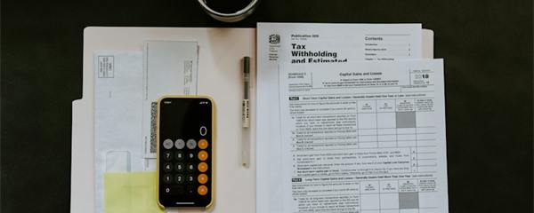
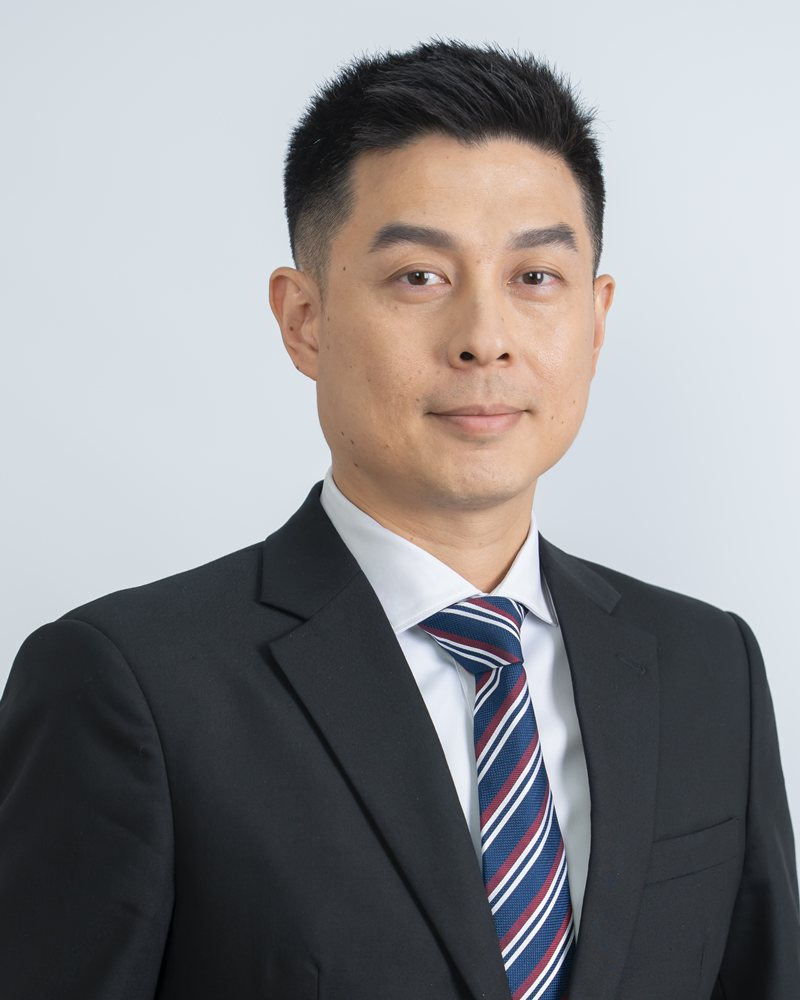
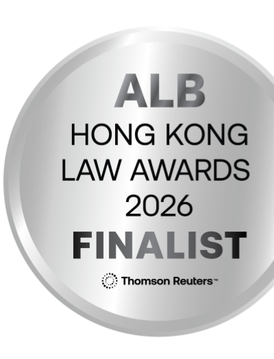
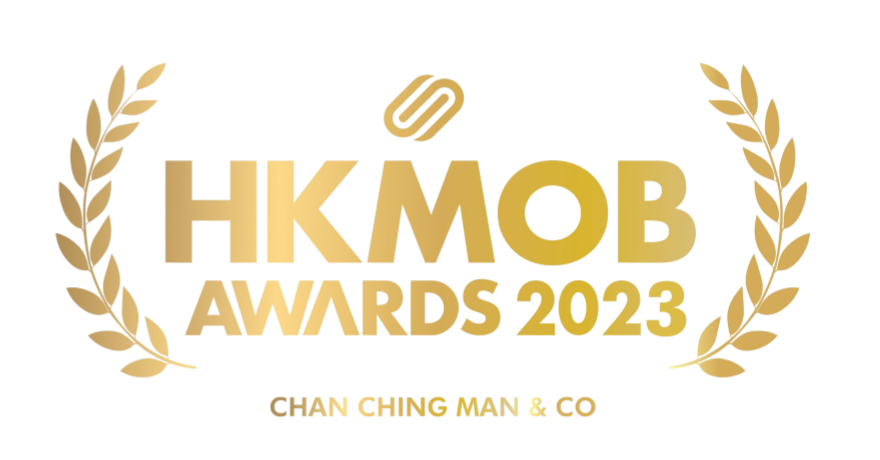
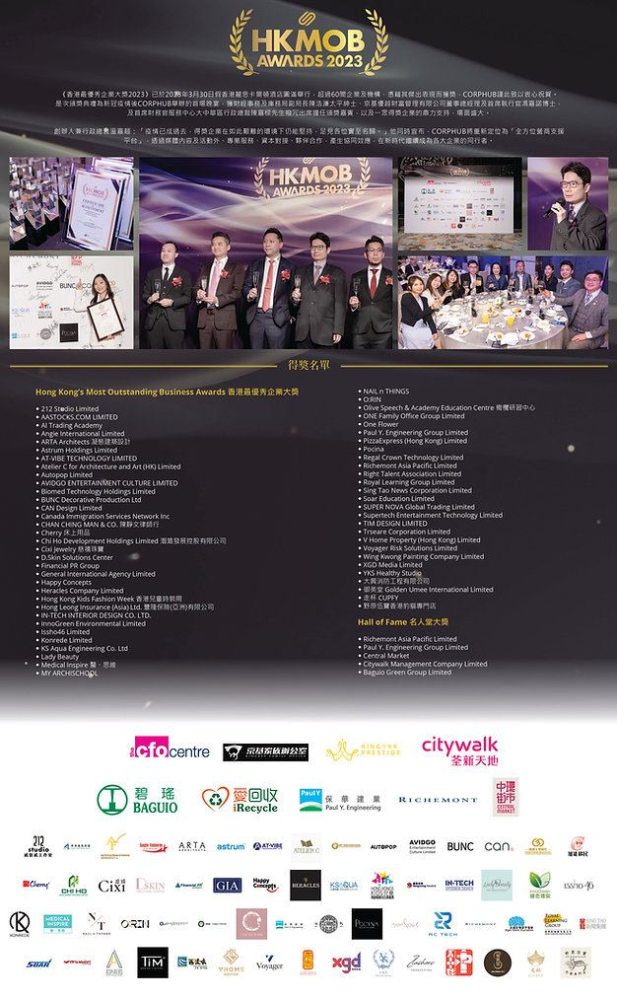
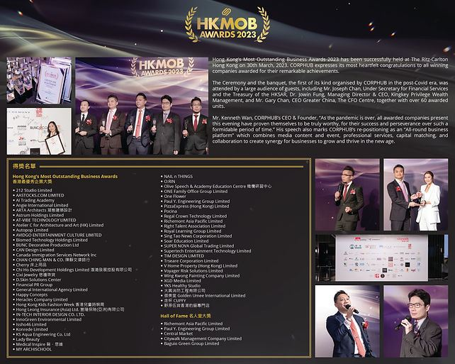
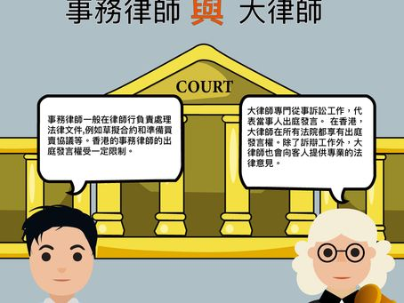

A boutique law firm in Hong Kong providing comprehensive legal services with a practical, client-focused approach since 2016.
我們是一家位於香港的精品律師事務所，自2016年起提供全面的法律服務，以務實、以客為本的方針為客戶解決問題。
Chan Ching Man & Co. is a Hong Kong law firm. We act for companies, banks and private clients in disputes and arbitration, and advise on corporate, compliance and private client matters.
陳靜文律師事務所是一家香港律師事務所。我們代表企業、銀行及私人客戶處理爭議及仲裁事宜，並就公司、合規及私人客戶事務提供法律意見。
Our clients are Hong Kong and Mainland companies, financial institutions, overseas businesses and individuals. Foreign law firms instruct us when they need Hong Kong representation, advice on Hong Kong law, or a court application here in support of proceedings elsewhere.
我們的客戶包括香港及內地公司、金融機構、海外企業及個人。當海外律師事務所需要香港代表、香港法律意見，或需在香港提出司法程序以支援其他司法管轄區的訴訟時，均會委託我們處理。
The firm was founded in 2016 by Maggie Chan, who is qualified in Hong Kong and in the Greater Bay Area. Our general practice also covers civil litigation, criminal litigation, judicial review, family law, employment law, personal injury, intellectual property, conveyancing, and wills and probate.
本所由陳靜文律師於2016年創立，她同時具備香港及粵港澳大灣區的執業資格。我們的一般業務亦涵蓋民事訴訟、刑事訴訟、司法覆核、家庭法、僱傭法、人身傷害、知識產權、物業轉讓及遺囑和遺產承辦。
Since Chan Ching Man & Co. was established in 2016, we have provided a wide range of services to individuals and businesses. On every project we undertake, our most important objective is to relate with clients and understand their core necessities and goals.
自陳靜文律師事務所於2016年成立以來，我們為個人及企業提供廣泛的服務。在每一個項目中，我們最重要的目標是與客戶建立聯繫，了解他們的核心需求和目標。
We act as Hong Kong counsel on arbitration. We advise on Hong Kong arbitration law and the Arbitration Ordinance (Cap. 609), support foreign counsel and parties running Hong Kong-seated cases, and handle the court applications that arise before, during and after an arbitration.
我們擔任仲裁事宜的香港法律顧問，就香港仲裁法及《仲裁條例》（第609章）提供意見，協助以香港為仲裁地案件的外地律師及當事人，並處理仲裁前、仲裁期間及仲裁後所需的法院申請。
Advice and hearing support
法律意見及聽證支援
Court applications
法院申請
We act urgently for victims of commercial and investment fraud, and for banks and trustees whose funds have been misdirected. Our work covers:
我們為商業及投資詐騙的受害人，以及資金被錯誤轉移的銀行及信託人提供緊急法律服務，範圍包括：
We enforce Mainland judgments and foreign arbitral awards and judgments in Hong Kong, and support overseas clients and counsel who need Hong Kong relief in aid of proceedings elsewhere. Our work covers:
我們在香港執行內地判決以及外地仲裁裁決和判決，並協助需要在香港取得救濟以支援其他司法管轄區程序的海外客戶及律師。範圍包括：
We provide services to our clients at different stages of their corporate lifetime to assist them when they come into operation, manage their existing business relationships, form fresh alliances, raise funds for growth and tap into new business opportunities. We also advise companies of all sizes, from domestic start-up businesses to large multinational listed companies. We provide professional legal advice on a broad spectrum of corporate and commercial work and have expertise in dealing with negotiation, preparing legal documentation and providing advice in relation to a wide variety of corporate and commercial transactions, frequently with a cross border dimension.
Setting up a company. Incorporating a Hong Kong company and putting its governance in place: registered office and secretarial arrangements, director and shareholder documents, shareholders' agreements, share transfers, group reorganisations, and advice on directors' duties.
成立公司。註冊香港公司並建立其管治架構：註冊辦事處及公司秘書安排、董事及股東文件、股東協議、股份轉讓、集團重組，以及就董事職責提供意見。
Moving a business to Hong Kong. For businesses relocating to Hong Kong or restructuring through it: choosing the entity and holding structure, moving contracts across, employment and secondment papers, employment visas, opening bank accounts, leases, and any licences the sector needs.
將業務遷移至香港。為遷移至香港或透過香港進行重組的企業提供服務：選擇實體及控股架構、轉移合約、僱傭及外派文件、工作簽證、開立銀行帳戶、租約，以及所屬行業所需的各項牌照。
Setting up trusts and fund structures for family and investment holdings, including crypto and other digital assets. Our work covers:
為家族及投資持股設立信託及基金架構，包括加密貨幣及其他數字資產。範圍包括：

For banks and financial institutions, and for Hong Kong companies caught by sanctions: screening counterparties and payments, and AML and KYC policy reviews.
為銀行及金融機構，以及受制裁影響的香港公司提供服務：交易對手及付款審查，以及反洗錢和客戶身分審查政策的檢視。
Our firm's litigation department provides full professional civil litigation service and has experience in handling a wide variety of cases. With knowledge of court procedures and various areas of laws, we are able to provide effective solutions to crack problem, institute or defend cases in relation but not limited to the following areas:
We have extensive experience in representing clients in criminal investigations or prosecutions. We start advising our clients on criminal laws and procedures as soon as there are risks of any criminal investigation or charges. After charge, we assist our clients to formulate a most effective defence strategy. Our services include:
We value children's rights and the right to family life. We have experience in sharing the stress of family disputes with our clients and provide solutions to such disputes. We represent clients in divorce and consequent financial arrangements, foster care arrangements, adoptions, maltreatments, domestic violence, child abuse, etc. Our services include:
Our firm offers a comprehensive package of services for our selected clients who are local and international brands in the strategy, protection and enforcement of their intellectual property rights in Hong Kong and other jurisdictions. Our services include:
Our firm has obtained wide experience in our practice relating to real property and has developed extensive networks with various clients and public bodies. We represent a range of individual and corporate clients in dealing with all aspects of legal service in relation to residential, industrial and commercial real estate:
We have extensive experience in assisting our clients to plan how their assets are best used and distributed according to their wishes. We provide services in both non-contentious and contentious matters.
Arbitration-related, commercial and revenue matters, and our fraud, recovery and enforcement work.
與仲裁相關的案件、商業及稅務事宜，以及我們在詐騙、資產追討及執行方面的工作。
Representing the applicant seeking to set aside a partial award on jurisdiction, on the ground that the presiding arbitrator failed to disclose a material connection. The application has been argued in the Court of First Instance and is now before the Court of Appeal.
代表申請人申請撤銷一項有關管轄權的部分裁決，理由是首席仲裁員未披露重大關聯。該申請已在原訟法庭進行陳詞，現正待上訴法庭處理。
Representing a crude and refined products trader resisting an application to set aside a partial award on jurisdiction, and defending the enforceability of that award in Hong Kong.
代表一家原油及煉製品貿易商，抗辯一項要求撤銷有關管轄權部分裁決的申請，並在香港維護該裁決的可執行性。
Representing a beneficiary charged ad valorem stamp duty on a property transferred to her from her late mother's estate. We appealed the assessment on the basis that the transfer fell outside the charge. As an outcome, the duty was repaid in full and the Inland Revenue Department amended its published policy on transfers between close relatives out of an estate.
代表一名受益人，其自已故母親遺產中承讓的物業被徵收從價印花稅。我們以該項轉讓不屬徵稅範圍為理由提出上訴。結果稅款獲全數退還，稅務局並修訂其就遺產中近親之間轉讓的公布政策。
Acting as standing counsel to a global elastomers distributor. We conducted a six-day trial for breach of fiduciary duties involving US$8.3 million and RMB 5.8 million, and run the company's debt recovery programme. As an outcome, more than 30 winding-up actions have recovered over US$650,000.
擔任一家全球彈性體產品分銷商的常任法律顧問。我們就涉及830萬美元及人民幣580萬元的違反信託責任案件進行了為期六天的審訊，並負責該公司的債務追討計劃。結果，超過30宗清盤程序共追回逾65萬美元。
Representing two Australian pension fund trustees whose transfer was diverted into a Hong Kong company's account. Within days we obtained a freezing injunction with Bankers Trust and gagging orders, traced the money through several accounts, and secured summary judgment and a garnishee order. As an outcome, approximately HK$2.6 million was recovered for the trustees.
代表兩名澳洲退休基金信託人，其匯款被轉入一家香港公司的帳戶。我們在數日內取得資產凍結令，連同 Bankers Trust 披露令及禁止披露命令，追蹤資金流經多個帳戶，並取得簡易判決及第三債務人命令。結果為信託人追回約港幣260萬元。
Representing an investor in a HK$68 million investment scam operated by eight defendants through a network of companies and personal accounts. We pursued each defendant and traced the money into the hands of those who received it. As an outcome, we obtained judgment for over HK$66 million, with tracing relief against the recipients.
代表一名投資者，涉及八名被告透過公司網絡及個人帳戶操作的港幣6,800萬元投資騙局。我們向每名被告追究責任，並追蹤資金至收款人手中。結果取得逾港幣6,600萬元的判決，並就收款人取得追蹤救濟。
Representing a bondholder against the director of a listed company who had personally guaranteed two bonds and then defaulted. We obtained a freezing injunction over his Hong Kong assets. As an outcome, the claim settled in full (HK$5 million and US$400,000) within two weeks of the order.
代表一名債券持有人，向一家上市公司董事追討；該董事曾就兩批債券作個人擔保，其後違約。我們就其在香港的資產取得凍結令。結果索償在命令頒下後兩星期內獲全數和解（港幣500萬元及40萬美元）。
Representing a Mainland bank enforcing an RMB 439 million loan judgment after the two-year window under the Mainland Judgments Ordinance had closed. We obtained a freezing injunction and argued that common law enforcement survives that limit. As an outcome, the point was decided in the bank's favour, reported, and cited twice since.
代表一家內地銀行執行一項人民幣4.39億元的貸款判決，當時《內地判決條例》下的兩年期限已屆滿。我們取得資產凍結令，並主張普通法下的執行途徑不受該期限限制。結果法院裁定該爭議點對銀行有利，該判決獲彙報，其後並被引用兩次。
The matters above are illustrative only. Past results do not guarantee a similar outcome in any future matter.以上案例僅供參考。過往結果並不保證任何日後案件會有相同或類似結果。
Maggie acts for companies and private clients in commercial disputes, fraud and asset recovery, and cross-border enforcement, and leads the firm's arbitration work. She appears regularly in arbitration-related proceedings in the Court of First Instance and the Court of Appeal, including applications to set aside awards and for interim measures, and acts in criminal matters at every level of court. Her wider disputes work covers asset tracing, shareholder and directors' duties claims, land and tenancy disputes, trade marks, employment and estates. She also advises on setting up and structuring companies, moving a business to Hong Kong, trusts and funds including digital assets, and sanctions and compliance for banks and Hong Kong companies. Maggie is an Accredited Family Mediator (HKMAAL) and a Civil Celebrant of Marriages. She founded the firm in 2016, having trained at Lo & Lo and practised as consultant solicitor at K.M. Tang & Co.
陳律師代表企業及私人客戶處理商業爭議、詐騙及資產追討，以及跨境執行事宜，並主導本所的仲裁業務。她經常於原訟法庭及上訴法庭處理與仲裁相關的程序，包括撤銷裁決及臨時措施的申請，亦於各級法院處理刑事案件。其爭議業務亦涵蓋資產追蹤、股東及董事職責索償、土地及租務糾紛、商標、僱傭及遺產事宜。她同時就成立及重組公司、將業務遷移至香港、信託及基金（包括數字資產），以及銀行和香港公司的制裁與合規事宜提供意見。陳律師為香港認可家事調解員（HKMAAL）及民事婚禮監禮人。她於2016年創立本所，此前曾於 Lo & Lo 接受訓練，並於 K.M. Tang & Co. 擔任顧問律師。
Joined in July 2024, primarily focusing on dispute resolution and Wills & Probate. Experienced in personal injury, matrimonial proceedings, contractual disputes, adverse possession, mortgage actions, contested probate, and conveyancing.
2024年7月加入，主要專注於爭議解決及遺囑與遺產承辦。擁有處理人身傷害、婚姻訴訟、合約糾紛、逆權侵佔、按揭訴訟、遺囑爭議及物業轉讓的經驗。
LL.B from University of Kent, LL.M in Intellectual Property Law from Queen Mary University of London, PCLL from City University of Hong Kong. Experienced in commercial, civil litigation, matrimonial, and building management matters.
持有肯特大學法學士、倫敦瑪麗女王大學知識產權法碩士及香港城市大學法學專業證書。擁有處理商業、民事訴訟、婚姻及大廈管理事務的經驗。

LL.B from Manchester Metropolitan University, PCLL from HKU. Qualified in 2026 after training with the firm. Previously served 10 years in the Correctional Services Department. Criminal defence, commercial disputes, winding-up, bankruptcy, probate, matrimonial and personal injury.
持有曼徹斯特城市大學法學士及香港大學法學專業證書。於本所完成實習後，2026年取得律師資格。曾於懲教署服務10年。專長於刑事辯護、商業糾紛、清盤、破產、遺產承辦、婚姻及人身傷害。
Nearly 25 years in the profession, with the firm since 2021. Admitted as Legal Executive in 2009. Commercial litigation, shareholders' disputes, land and property, debt recovery, employment, insolvency, family law and criminal defence at all levels of court.
擁有近25年法律界經驗，自2021年起加入本所。2009年獲認許為法律行政人員。專長於商業訴訟、股東糾紛、土地及物業、追討債務、僱傭、破產清算、家庭法及各級法院刑事辯護。
Over 8 years in the legal industry, with the firm since 2016. Diploma in Legal Studies from HKU SPACE. Provides support in legal research, file management, drafting and reviewing legal documents, with experience in civil and criminal litigation at all levels of Courts.
擁有超過8年法律界經驗，自2016年起加入本所。持有香港大學專業進修學院法律學文憑。提供法律研究、案件管理、法律文件草擬及審閱支援，具有各級法院民事及刑事訴訟經驗。
University graduate with Bachelor in Law and Business. Joined the firm in September 2023. Zealous to learn and always prepared to go the extra mile. Enjoys challenges in the dynamic legal field and provides proactive assistance to clients with diverse needs.
大學畢業，持有法律及商業學士學位。2023年9月加入本所。熱衷學習，隨時準備多走一步。喜歡在充滿活力的法律領域迎接挑戰，積極主動為不同需要的客戶提供協助。

Run by Asian Legal Business, the Thomson Reuters legal title for the region, and held every year since 2001. Finalists are chosen on written submission by an independent panel of senior figures from the profession. The 2026 Hong Kong edition was the programme's 25th and drew a record number of entries.
由湯森路透旗下亞洲區法律刊物《Asian Legal Business》主辦，自2001年起每年舉行。入圍名單由業界資深人士組成的獨立評審團根據書面提交資料選出。2026年香港站為該獎項第25屆，並創下參選數目新高。

Presented by CORPHUB and judged by industry leaders, Chamber of Commerce members and editors against four criteria: management and governance, competitiveness, innovation in services, and corporate social responsibility.
由 CORPHUB 頒發，並由業界領袖、商會會員及編輯團隊依據四項標準評審：管理及企業治理、競爭力、服務創新，以及企業社會責任。
"Professional, responsive and genuinely caring. The team explained every step of my litigation clearly and put me at ease throughout."
「專業、回應迅速，而且真誠關懷。團隊把我訴訟的每一步都解釋得清清楚楚，全程讓我安心。」
"They handled our company's trademark registration efficiently and gave us practical, commercially-minded advice. Highly recommended."
「他們高效處理我們公司的商標註冊，並提供切合商業實際的建議。極力推薦。」
"Compassionate and clear during a difficult family matter. I always felt my interests were protected. Thank you for the support."
「在困難的家事案件中給予體諒和清晰指引，我一直感到自己的利益受到保障。感謝你們的支持。」
Scan to connect with us on WeChat.
掃描二維碼，透過微信與我們聯絡。
You may call us at +852 2689 0988 or email info [at] chanchingman.com to arrange an appointment. We will confirm a suitable time and let you know what documents to bring.
您可致電 +852 2689 0988 或電郵至 info [at] chanchingman.com 預約。我們會與您確認合適時間，並告知需要攜帶的文件。
Fees depend on the nature and complexity of the matter. Depending on the case, we may charge on an hourly basis or a fixed fee. We will provide a clear fee estimate before commencing work.
費用視乎案件性質及複雜程度而定。視乎個案，我們可按時收費或收取固定費用。在開始工作前，我們會提供清晰的費用預算。
We cover corporate & commercial, civil and criminal litigation, family & matrimonial, intellectual property, conveyancing, and wills & probate. See our Practice Areas section for details.
我們處理公司及商業、民事及刑事訴訟、家庭及婚姻、知識產權、物業轉讓，以及遺囑及遺產承辦等範疇。詳情請參閱「業務範疇」部分。
Yes. Our team is fluent in English, Cantonese and Mandarin, and we are able to handle documents and proceedings in both English and Chinese.
是的。我們的團隊精通英語、廣東話及普通話，能以中英文處理文件及法律程序。
Our office is at Unit 3203A, 32/F, Tower One, Lippo Centre, 89 Queensway, Admiralty, Hong Kong — directly above Admiralty MTR station.
我們的辦公室位於香港金鐘道89號力寶中心一座32樓3203A室，鄰近金鐘港鐵站。
We are from time to time looking for trainee solicitors with good academic qualifications. To facilitate our wide client base, we look for individuals with a diverse background and an open mind to challenge the traditional ways of how clients are served and how to add value to clients. We are committed to continuously facilitate the growth of our people to ensure that they reach their maximum potential and provide an innovative work environment that encourages everyone to share viewpoints, approaches and ideas.
我們不時招聘具有良好學術資歷的見習律師。為配合廣泛的客戶群，我們尋找具有多元背景及開放思維的人才，願意挑戰傳統服務客戶的方式，為客戶創造更多價值。我們致力促進團隊成員的成長，確保他們發揮最大潛能，並提供一個鼓勵分享觀點、方法和想法的創新工作環境。
If you are a qualified legal professional who shares our vision and would like to form part of our collaborative and multidisciplinary team, we would love to hear from you.
如果您是一位認同我們理念的合格法律專業人士，希望加入我們協作及多元化的團隊，我們期待您的聯繫。
Featured interview discussing our firm's approach to legal services.
專題訪問，討論本所的法律服務理念。

Newspaper · 12 Apr 2023報章 · 2023年4月12日

Online news · 12 Apr 2023網上新聞 · 2023年4月12日
高等法院每年8月休庭——如果你要在夏天進行法律程序，有幾點要留意。
每年的9月1日，除了是莘莘學子放完暑假後的開學日外，原來也是高等法院法官放假完暑假後的開庭日。
根據《高等法院規則》第64號命令，原訟法庭及上訴法庭在每年的8月1日及8月31日期間休庭，在休庭期間，原訟法庭及上訴法庭只會處理有限度事宜如禁制令申請、公司破產等，或終審法院首席法官決定有需要開庭即時或從速聆訊的訟案、事宜或申請。
根據《高等法院規則》第3號命令，除法庭另有指示外，在計算將任何狀書送達、送交存檔或修訂的期限時，夏天休庭期間不得計算在內。
如果你要在夏天期間於高等法院進行任何程序的話就要留意啦！
刑事與民事訴訟由誰提出、處理甚麼糾紛？一文看清兩者分別。
訴訟案件可以分為刑事訴訟和民事訴訟。
香港的刑事訴訟是會由香港特區政府向法庭提出，申請向被控犯罪人士定罪及判刑，令他們為作出的違法行為繩之於法。本港的刑事檢控工作是由律政司司長全權負責，並不會受制於其他政府部門的任何指令，確保司法獨立。
而律政司在決定是否對案件檢控時主要會考慮以下兩點：
簡單的檢控工作可以由警方或其他調查機構處理而不需律政司司長的介入，並可在裁判法院經由高級法庭檢控主任審閱。而嚴重的刑事罪案，例如謀殺、強姦、持械行劫等，一般會由高等法院原訟法庭法官會同陪審團進行審訊。
香港特區政府或任何個人、機構、公司或組織向法庭提出，申請向香港特區政府或任何個人、機構、公司或組織索償，及其他指示解決各方的紛爭，包括有關合同、股東、僱傭、土地、租賃等糾紛。
民事訴訟案件主要包括合約法、侵權法、財產法、行政法、家事法及稅務法：
An overview of the differences between solicitors and barristers in Hong Kong's legal system.
介紹香港法律制度中事務律師與大律師的分別。

發生交通意外後，司機在法律上必須做的五件事。
發生交通事故時，司機須履行以下責任：
《道路交通條例》第65(1)條訂明，凡因發生交通意外而對另一方造成傷害，或對附近另一車輛或物件造成損壞，司機必須停車。司機應在事故現場逗留一段足夠長的時間，以便任何人都可以從司機那裡獲取該駕駛者的相關詳情。
根據《道路交通條例》第65(2)條，在發生意外時，司機有責任在被要求時向警務人員提供相關詳情，包括其姓名和地址、車主的姓名和地址，以及車輛的登記號碼。該職責屬於個人責任，因此司機必須親自提供相關詳情，而不能交託乘客提供有關詳情後自己離開現場。
如在事故現場沒有人可以讓司機提供詳情，司機則有責任根據《道路交通條例》第56(2A)條在事故發生後24小時內親自到最近的警署報案。
根據《道路交通條例》第57(1)條，在造成死亡或嚴重受傷或造成嚴重損壞的嚴重交通事故中，銷毀、更改或隱瞞任何證據均屬違法。
現時香港並沒有法律規定司機向保險公司報告事故。但是，大多數車輛保險政策都要求如果車主打算根據其保單索取賠償，發生意外後必須立即向保險公司報告事故。
These Website Terms and Conditions and our Privacy Statement (please refer to Privacy Policy) (collectively, the "Terms"), govern your use of www.chanchingman.com (the "Website"). Please read the Terms carefully and if you do not accept the Terms in full, please stop access to and use of the Website immediately.
這些網站條款和條件以及我們的隱私聲明（請參閱隱私政策）（以下統稱為「條款」）約束您對 www.chanchingman.com（以下簡稱「網站」）的使用。請仔細閱讀條款，如果您不完全接受條款，請立即停止訪問和使用本網站。
The Website is intended for general informational purposes only. The contents of the Website (the "Contents") provide a general guide on the areas of practice of Chan Ching Man & Co. ("us" or "we" and the grammatical derivatives thereof shall be construed accordingly). Nothing in this Website shall of itself be considered as creating a solicitor-client relationship between you, as the user, and us as rendering any legal services or legal advice. Please contact us if you require any legal advice for any specific legal question that you may have.
本網站僅用於一般信息目的。網站的內容（「內容」）提供了有關陳靜文律師行（「我們」或「我們」及其語法派生詞的實踐領域）的一般指南。本網站的任何內容本身均不應視為在您（作為用戶）與我們之間以及在我們與提供任何法律服務或法律建議之間建立律師-客戶關係。如果您對任何具體的法律問題需要任何法律建議，請與我們聯繫。
Should there be any conflict or inconsistency between the Chinese version and English version of the Terms, the English version shall prevail.
本條款的中文版本和英文版本之間如有任何矛盾或不一致之處，應以英文版本為準。
Last updated: October 2026. This notice explains what personal data Chan Ching Man & Co. ("we", "us") handles through this website and how. It is given in accordance with the Personal Data (Privacy) Ordinance (Cap. 486) ("PDPO").
最後更新：2026年10月。本聲明說明陳靜文律師事務所（「我們」）透過本網站處理哪些個人資料及如何處理，並按照《個人資料（私隱）條例》（第486章）（「私隱條例」）作出。
This website has no user accounts, logins, analytics, advertising or tracking cookies. It does not store any personal data on its server. Your language preference (English / Chinese) is saved only in your own browser (local storage) so the site remembers it on your next visit; you can clear it at any time through your browser settings.
本網站沒有用戶帳戶、登入、分析工具、廣告或追蹤 cookies，亦不會在伺服器上儲存任何個人資料。您選擇的語言（英文／中文）只會儲存在您自己的瀏覽器（本機儲存）內，方便下次瀏覽時沿用；您可隨時透過瀏覽器設定清除。
The enquiry form does not send anything to us by itself. Pressing "Prepare email" opens your own email application with the details you typed filled in; nothing is sent until you choose to send that email. When you contact us by email, telephone, WhatsApp or WeChat, we receive the information you choose to give us, such as your name, contact details and a description of your matter.
查詢表格本身不會向我們傳送任何資料。按下「準備電郵」只會開啟您自己的電郵程式並填入您輸入的內容，直至您決定發送該電郵前，不會有任何資料送出。當您以電郵、電話、WhatsApp 或微信聯絡我們，我們會收到您選擇提供的資料，例如姓名、聯絡方法及事項簡述。
We use the information you provide only to respond to your enquiry, to check for conflicts of interest, to consider whether we can act for you and, if we are instructed, to provide legal services. Please do not send confidential details until we have confirmed that we can act for you. We do not sell your personal data or use it for direct marketing.
我們只會使用您提供的資料以回覆您的查詢、進行利益衝突審查、考慮是否可代表您，以及在獲委託後提供法律服務。在我們確認可以代表您之前，請勿傳送機密資料。我們不會出售您的個人資料，亦不會將其用於直接促銷。
Fonts and images on this website are hosted on the website itself. The Google map in the Contact section loads only if you press "Show map"; Google then receives your IP address and browser information under Google's own privacy policy. Links to WhatsApp, WeChat, LinkedIn, Facebook and Instagram take you to those services, which handle your data under their own policies. The website is served by GitHub Pages, which may keep standard technical server logs (such as IP addresses) for security purposes.
本網站的字型及圖片均由網站本身提供。「聯絡我們」部分的 Google 地圖只會在您按下「顯示地圖」後才載入；屆時 Google 會按其私隱政策收到您的 IP 地址及瀏覽器資料。WhatsApp、微信、LinkedIn、Facebook 及 Instagram 的連結會帶您前往該等服務，並由其按各自的政策處理您的資料。本網站由 GitHub Pages 提供，其可能為保安目的保留一般技術伺服器紀錄（例如 IP 地址）。
We keep enquiry and client information only as long as necessary for the purposes above and to meet our professional and legal obligations, and we take reasonable steps to protect it. We may disclose it where required by law, by a court or regulator, or to professionals we engage on your matter (such as counsel) under a duty of confidentiality.
我們只會在上述目的及履行專業和法律責任所需的期間內保留查詢及客戶資料，並採取合理措施加以保護。如法律、法院或監管機構要求，或須向我們就您的事項委聘並負有保密責任的專業人士（例如大律師）披露，我們可能會披露有關資料。
Under the PDPO you may request access to, and correction of, personal data we hold about you. Please send requests or questions to info [at] chanchingman.com, or write to us at Unit 3203A, 32/F, Tower One, Lippo Centre, 89 Queensway, Admiralty, Hong Kong. We may charge a reasonable fee for a data access request as permitted by the PDPO.
根據私隱條例，您可要求查閱及改正我們持有關於您的個人資料。如有要求或疑問，請電郵至 info [at] chanchingman.com，或致函香港金鐘道89號力寶中心一座32樓3203A室。我們可按私隱條例的規定，就查閱資料要求收取合理費用。